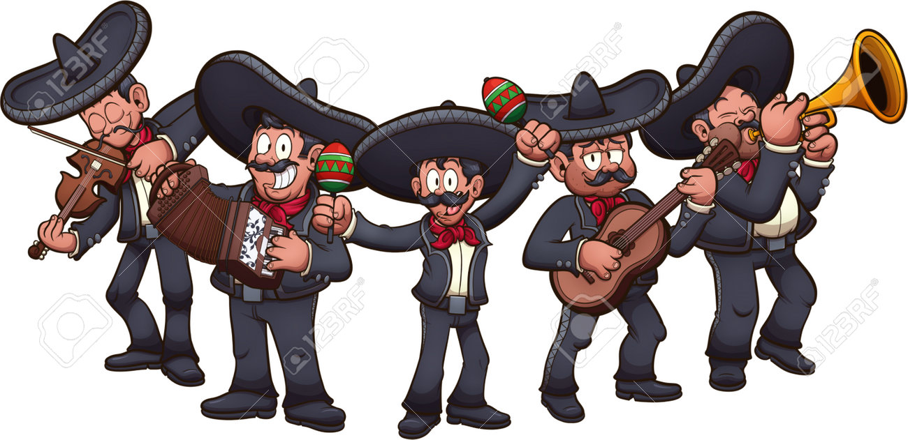

“La evolución de la música mexicana”
En este artículo exploraremos cómo la música mexicana ha sido reflejo de la identidad, historia y emociones del pueblo mexicano a lo largo del tiempo. La música mexicana no es solo entretenimiento: es memoria, protesta, celebración y tradición. Desde los rituales prehispánicos hasta los corridos tumbados, ha evolucionado con el país.
🕰️ Línea del tiempo musical
Prehispánico: Música ceremonial con instrumentos de barro y madera.
Colonial: Fusión con música europea, nacen los primeros géneros mestizos.
Revolución Mexicana: El corrido como crónica popular.Siglo XX: Consolidación del mariachi, ranchera, banda y norteña.
Actualidad: Fusión con géneros globales, auge digital y nuevos ídolos.
🎤 Influencia cultural
La música mexicana ha influido en el cine, la moda, la política y la identidad nacional. Artistas como Juan Gabriel y Vicente Fernández son símbolos patrios.
🌎 Proyección internacional
Con plataformas digitales y colaboraciones globales, la música mexicana ha cruzado fronteras. Hoy, artistas como Peso Pluma y Christian Nodal llenan estadios fuera de México.